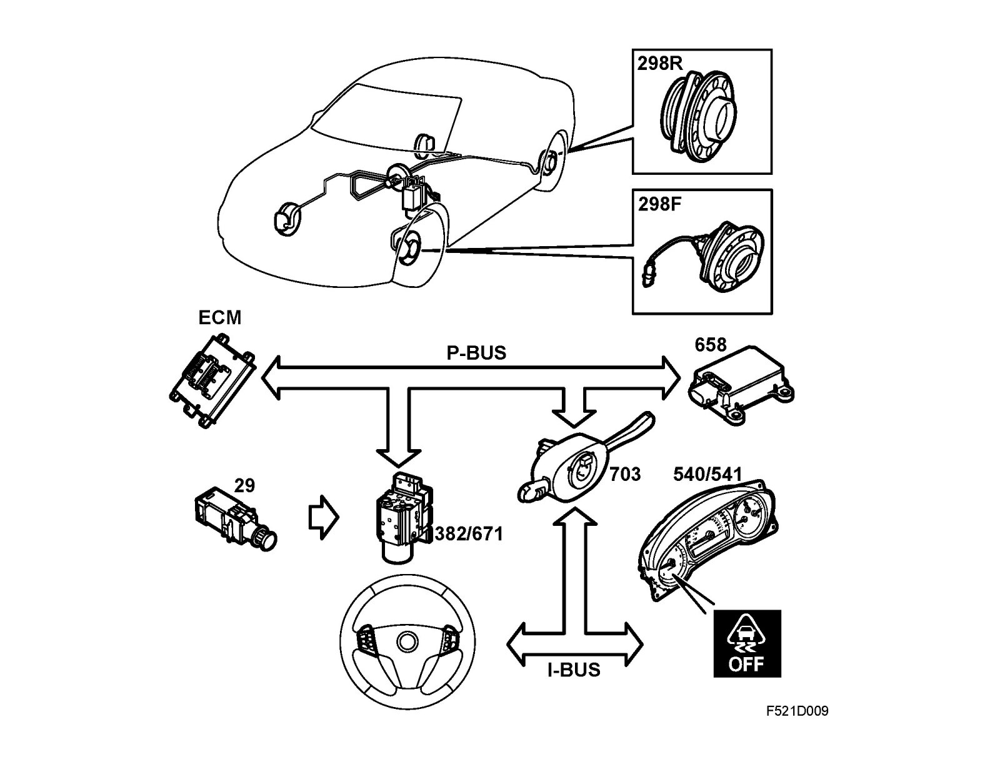

TCS/ESP, Brief Description
TCS/ESP, brief descriptionOverview

^ TCS control module (382)/ESP control module (671)
- control module
- valve housing
- pump
^ Front wheel speed sensor (298F)
^ Rear wheel speed sensor (298R)
^ MIU (540)
- ABS warning lamp
- TCS or ESP indicator lamp
- TCS OFF or ESP OFF warning lamp
- Brake warning lamp (EBD fault)
^ SID (541)
- Warning message, EBD fault
- Warning message, ABS fault
- Warning message, TCS fault
- Warning message, ESP fault
^ Steering wheel switch (633)
- TCS or ESP ON/OFF
^ Control module, Trionic 4 cyl petrol (589)/Control module, EDC16 4 cyl diesel (595)
^ Brake light switch (29), TCS/ESP
^ Column Integration Module (703) - ESP only
^ Yaw sensor (658) - ESP only
Description
The brake system comprises a dual-circuit, 4-channel brake system. The car can be equipped with either a TCS system or an ESP system.
Both systems have several interacting functions based on the following common components:
^ A hydraulic unit with the following integrated units:
- Pump comprising electric motor and pump unit
- valve block with 4 inlet valves, 4 outlet valves (TCS)
- valve block with 4 inlet valves, 4 outlet valves, 2 pressure increase valves and 2 pressure relief valves (ESP)
- Control module
^ Four wheel speed sensors to provide information on wheel speed.
The control module monitors car stability, braking distance and traction using continuous calculations which are based on information received from the wheel speed sensors, yaw rate sensor, lateral acceleration sensor and steering wheel angle sensor.
When the values exceed the limit for a particular criterion, the control module can activate any one of the functions EBD, CBC, ABS, TCS or ESP as described.
The control module activates the valves at very short intervals with rapid pulse trains to regulate the brake pressure to the wheel brakes and to activate the pump to evacuate brake fluid or quickly provide brake pressure to the wheel brakes. The control module can also request a lower engine torque to control stability and driveability.
All wheel speed sensors generate a pulse train, the frequency of which increases with increased wheel speed and provides the control module with information regarding individual wheel speed. The control module, which receives wheel speed information, continuously calculates wheel acceleration (speed increase), wheel retardation (speed decrease), wheel speed and wheel slip (degree of lock-up). The four wheel speed values are sent out as bus information.
Functions
EBD (Electronic Brake-force Distribution)
EBD is integrated in the control module and can be likened with a load sensing valve for the rear wheel brakes. In order to attain the best possible brake performance, it is essential that the front and rear wheels are all provided with maximum braking force for all conditions/loads. The control module regulates the electromagnetic inlet valves so that optimum braking force is obtained on the rear wheels without them locking before the front wheels under varying load conditions.
CBC (Cornering Brake Control) in ESP
CBC is a function, when used in combination with EBD and ABS, that stabilizes lateral and yaw movements by the vehicle in situations when the driver corners and brakes simultaneously. The system responds by braking all four wheels individually. CBC will perform the function when the driver applies the brake pedal at the same time as the slip criteria are met. CBC is activated in extreme situations only and prevents the car from oversteer situations. The function is part of ESP and is activated before the ABS condition.
ABS (Anti-lock Braking System)
The anti-lock braking system or ABS has been developed to obtain maximum braking effect with maintained stability in the most varying conditions. Many factors have a bearing on the final braking distance, e.g. weather conditions, condition of the road surface, current traffic situation and the braking force employed. ABS is a modulating function that utilizes maximum braking capacity in critical situations in varying road conditions.
The ABS system assists the driver with regards to
- Maintaining directional stability when braking.
- Maintaining steering ability during full application of the brake system.
- Shortening the braking distance.
- Reducing tire wear.
If a wheel should approach the limit of locking during braking, the control unit will activate the inlet/outlet valves and the pump so that the brake pressure on the wheel in question is modulated and maximum braking effect is attained with maintained steering.
TCS (Traction Control System) in TCS control module
The TCS function is an anti-slip function for improved traction. The control module works to reduce engine torque (request to engine management system).
The rear wheel speed is used as a reference for comparison of the two driving wheels individually. Wheel spin is when one of the driving wheels is rotating faster than the rear wheels. The magnitude of this wheel spin and the speed of the car are decisive to how the system works. Traction is give priority during wheel spin. The system uses only limitation of engine torque.
By only limiting the engine torque, the steering ability can be maintained at all speeds.
A certain degree of wheelspin is always allowed so that the sporty feel and handling of the car will still be retained. This varies with the speed of the car, the friction between the tires and the road surface and how "aggressively" the car is being driven (position of the accelerator pedal).
TCS (Traction Control System) in ESP control module
TCS is an anti-slip function which provides improved traction. The control module employs both reduction of engine torque (request to engine management system) and brake application on the drive wheels during TCS modulation.
The rear wheel speed is used as a reference for comparing the speed of the front wheels individually. When one of the drive wheels rotates faster than the rear wheels, the wheel is said to spin. The magnitude of this wheelspin and the speed of the car are decisive to how the system operates. Traction is given priority when wheelspin exceeds a limit value when the speed is lower than 40 km/h. The system then employs brake application first and then engine torque limitation.
The transfer of lateral forces to maintain steering ability is given priority when wheelspin exceeds a limit value at speeds above 40 km/h. The system then employs engine torque limitation first.
A certain degree of wheelspin is always allowed so that the sporty feel and handling of the car will still be retained. This varies with the speed of the car, the friction between the tires and the road surface and how "aggressively" the car is being driven (position of the accelerator pedal).
ESP (Electronic Stability Program)
ESP is a system that assists the driver in stabilizing the vehicle in unexpected situations that would otherwise could be difficult to handle by regulating engine torque and brake application.
The ESP, ABS and TCS functions work both independently and in combination with the same control module. Certain functions may operate despite a lit ESP OFF warning lamp.
When ESP engages due to a skid, for example, it can counter the skid by applying the brakes on one or more wheels without the driver having to touch the brake pedal. The engine power is also limited by the ESP control module requesting a certain engine torque to reduce the risk of spin on the drive wheels. The engine control module regulates the engine torque based on this request. ESP regulates instantaneously at high frequency according to the prevailing conditions.
The system receives information from a number of sensors and measures:
- Wheel speed
- Lateral acceleration
- Yaw rate
- Steering wheel angle
- Brake pressure
These values are used by the ESP control module that is integrated in the hydraulic unit. The control module calculates the course of the vehicle continuously and compares the actual value (the direction in which the vehicle is travelling) with the desired value (the direction the driver has chosen with the steering wheel).
If the actual value does not agree with the desired value, the system will engage as necessary to apply the brakes on one or more wheels and limit engine torque.
- If the car starts to understeer (when the front tends to continue straight ahead in a bend), the brakes will be applied on the inside rear wheel.
- If the car starts to oversteer (the rear tends to drift out), the system will apply the brakes on the outside wheels until the measured and the calculated yaw rates correspond.
Note
The course of the car is compared with the direction chosen by the driver with the steering wheel and if these values do not correspond, the ESP function will engage. The driver must be active in turning the steering wheel and accordingly the wheels in the correct direction of travel if the system is to be able to regulate correctly.
ESP does not mean that the driver can go faster but should be regarded as a safety net in unforeseen situations.
If the surface friction is low, it will make no difference how much you turn the steering wheel. It is extremely difficult to correct the direction of a vehicle when the lateral forces between the tire and the road surface are close to zero.
Self-check
After start, once the vehicle has reached a speed of 6 km/h, the ESP system performs a self-check of the valves and pump. This check may be audible.
Expanded function in ESP for B284
^ BTC (Brake Torque Compensation. Provides a smoother and more comfortable engagement of ESP.